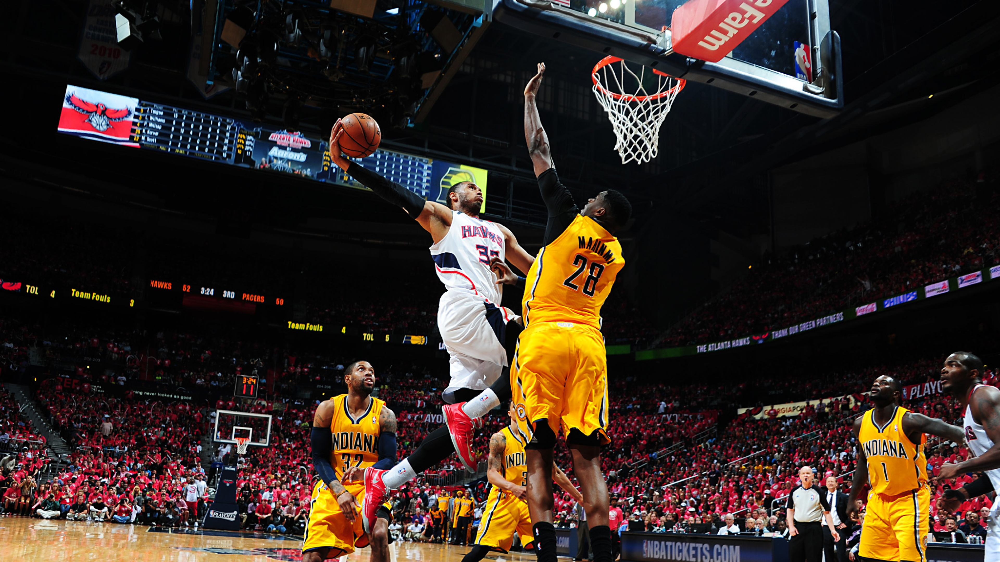
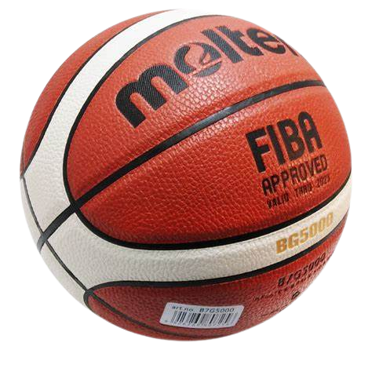

La pallacanestro, conosciuta anche come basket, è uno sport di squadra in cui due formazioni, di cinque giocatori ciascuna, si affrontano per realizzare punti facendo passare il pallone all'interno dell'anello del canestro avversario, secondo alcune regole prefissate e con un punteggio che varia rispetto alla posizione di tiro.
Nasce a Springfield (una città degli Stati Uniti d'America) nel 1891, grazie all'idea di James Naismith, medico e insegnante di educazione fisica canadese. Dalla fine del XIX secolo, il basket si è diffuso in tutto il mondo, grazie all'attività propagandistica della Federazione Internazionale Pallacanestro, fondata nel 1932.
È uno sport olimpico dalle XI Olimpiadi che si tennero a Berlino nel 1936.

Indice
- Attrezzi Usati
- Regole
- Schemi
- Ruoli
- Mosse
- Statistiche
Home
(Le strutture)
(Come si svolge il gioco)
(Fasi del gioco)
(Tutti i ruoli esistenti della Pallacanestro)
(Le varie mosse nel gioco)
(Tutte le possibili statistiche)
Attrezzi Usati
Le partite di pallacanestro si giocano all’interno di palazzetti dello sport coperti, con il soffitto che deve essere alto almeno 7 metri.
Per quanto riguarda le misure, il campo regolamentare deve essere 15 x 28 metri con superficie in legno delimitato da righe larghe 5 centimetri.
Le panchine dove sono seduti i giocatori devono essere a 2 metri dalla linea perimetrale e la linea del tiro libero deve essere a 5,8 metri da quella perimetrale sotto il canestro.
Ed ecco il protagonista: il canestro, da cui origina il nome del gioco. Serve un canestro regolamentare che é di 305 centimetri. La misura del canestro è standard e fissata a livello internazionale. Il diametro dell’anello deve misurare 45 cm ed essere posto ad un’altezza di 3.05 m rispetto al suolo.
I due canestri, sostenuti dai tabelloni e da un apposito impianto, debbono essere distanti almeno 1.20 m dalla linea di fondo campo. Le dimensioni regolamentari di ogni tabellone sono: 105 cm di altezza, 180 cm di lunghezza e 5 cm di larghezza. All’interno del regolamento NBA, la misura ufficiale è di “10 feet”, ossia 10 piedi, pari a 3.048 metri.
Inoltre serve la palla, le cui misure non devono essere precise come per il campo o il canestro, la sua circonferenza infatti può variare dai 74,9 ai 78 centimetri, é importante che sia di forma sferica (cioé che sia senza alcun tipo di deformazione), il materiale con la quale è costruita può essere sia di cuoio sia di un materiale sintetico e il peso può variare da 567 a 650 grammi.
Una cosa non fondamentale ma che ha la sua utilitá é il tabellone segnapunti che include cronometro, segnapunti di entrambe le squadre, segnafalli, segna timeout, quarto e cambi.




Torna alla Home
Regole
Nella pallacanestro ci sono molte regole:
I giocatori sono 12 per ogni squadra di cui 7 in panchina e 5 in campo;
Ogni giocatore ha un massimo di falli a partita tra cui: 7 falli tecnici (quando un giocatore protesta su una decisione dell'arbitro, il fallo tecnico può anche essere assegnato alla panchina che anche essa ha un massimo di 7 falli. Inoltre i falli tecnici vengono puniti con 2 tiri liberi senza rimbalzo più il possesso palla);
2 falli antisportivi che sono quelli che vengono assegnati in caso di falli volontari e, infine, 5 falli normali. Il giocatore viene espulso quando supera la soglia massima.
Dati questi falli chiamati "di giocatore", esistono anche i falli di squadra che se superati i 5 per quarto al successivo verrá eseguita la norma (chiamata bonus) dei 2 tiri a favore della squadra avversaria . Approfondendo, i 2 tiri sono un metodo di sanzione che viene messo in atto solo se viene eseguito un fallo su tiro o per quanto spiegato in precedenza
Inoltre, ci sono le regole chiamate temporali, infatti un giocatore nell'area avversaria non può tenere il pallone in mano senza palleggiare per più di 5 secondi e non può restare fermo per più di 3 secondi; una squadra non può possedere il pallone senza superare la metà campo per più di 8 secondi, né lo può possedere senza tentare di tirare a canestro per più di 24 secondi.
C'è in aggiunta l' infrazione di campo, essa avviene quando la squadra che ha il possesso della palla, dopo aver superato la metà campo, ritorna nella propria zona di difesa anche solo toccando la linea di metà campo.
Una delle regole più importanti é quella dell'infrazine di passi che viene applicata se un giocatore cammina o salta con la palla in mano, un altra regola é l'infrazione del doppio palleggio che viene applicata se un giocatore palleggia, smette di palleggiare e poi ricomincia a palleggiare.
Per concludere diciamo che vince la squadra che alla fine della partita realizza più punti. Nel basket non è ammesso il pareggio, se alla fine della partita il punteggio è uguale si effettuano uno o più tempi supplementari finché una squadra ottiene la vittoria.

Torna alla Home
Gli Schemi
Nel gioco del basket si trovano un' infinita di schemi questo è dato dal fatto che ogni coach crea lo schema che piu gli è utile a seconda dei giocatori in campo e della squadra avversaria.
Uno dei più utilizzati è quello dell'attacco a uomo: consiste nel muovere in contemporanea 4 esterni e 1 giocatore che si muove sugli interni del campo. Colui che svolge il ruolo di playmaker in campo, deve infatti sovrapporsi a quello che ricopre la figura del pivot abbassato.Così facendo, dunque, da una parte si avrebbe il play di gioco e dall’altra il pivot in posizione più bassa rispetto ai compagni. Sostanzialmente, si tratta di una sovrapposizione da parte degli altri giocatori, con il pivot che blocca il contrasto avversario. Questo, è utile per permettere ai compagni di svolgere le loro incursioni in maniera più efficace.
Un altro schema molto comune è quello dell'attacco Princeton (il nome deriva dal luogo di origine cioè l'università di Princeton) Innanzitutto, per poter attuare questa tecnica bisogna rispettare un requisito fondamentale: avere dei giocatori particolarmente dotati nel passaggio, più precisamente, ne servono cinque con questa qualità. Sostanzialmente, quattro giocatori devono presentarsi nella zona di campo riguardante i tre punti. L’ultimo rimasto, invece, deve trovarsi nella posizione di tiro libero, in quanto viene liberato dal movimento a tutto campo effettuato dai compagni. La dote nel passaggio di cui si parlava prima, tornerà utile per far sì che il fraseggio dei compagni porti il tiratore a concludere a canestro. Una tattica senza ombra di dubbio parecchio complessa, ma altamente remunerativa nel suo totale. Ovviamente, questo accade solo ed esclusivamente se il coach è bravo ad attuarla. Diversamente, potrebbe non essere poi così tanto profittevole, specie se non si hanno i giocatori adatti.

Torna alla Home
Ruoli
Nel basket i ruoli sono solo 5 (1 per ogni giocatore) e troviamo:
Il Playmaker
É in sostanza il regista della squadra, colui che gestisce il pallone per il maggior tempo durante la fase di attacco ed imposta gli schemi, di comune accordo con il coach oppure basandosi sul suo intuito. In genere può essere il giocatore più basso della squadra. E'l’atleta che sa palleggiare meglio fra i compagni e, giocando fronte a canestro, ha la miglior visione in assoluto durante le fasi di gioco..png)
La Guardia Tiratrice
É il bomber della squadra, anche se non sempre si tratta di una regola ben definita. Dotata di un ottimo tiro, in alcuni casi può essere specialista del tiro da 3 punti oppure un fortissimo penetratore, ovvero del giocatore che parte in palleggio verso l’area e segna oppure passa il pallone ad un compagno smarcato. Un tempo la guardia era anche il miglior difensore del team, ma nel tempo questo legame si è affievolito..png)
L'Ala Piccola
Sa svolgere le fasi si attacco sia con la penetrazione che con il tiro da fuori. L’altezza tocca i 2 metri, sempre però puntando sull’agilità più che sulla potenza. La vera differenza si nota nella fase difensiva, quando con la difesa a zona 2-3 si sposta più vicino al canestro dando una mano ai giocatori più fisici..png)
L'Ala Grande
L’ala grande è un giocatore molto versatile nel basket moderno, che spicca soprattutto per la presenza in tante statistiche come rimbalzi, assist, palle rubate, sfruttando l’altezza più che il fisico massiccio oltre a poter essere, in determinate squadre, il trascinatore a livello realizzativo. Nei teams di alto livello può anche raggiungere l’altezza di 210 cm..png)
Il Centro
Noto a livello internazionale come il pivot, è uno dei ruoli più noti del basket. Il 5, detto bigman quando il fisico è straripante, è il giocatore più grande e grosso della squadra. Nelle squadre di altissimo livello è ormai normale avere un pivot di 215 cm, anche se ci sono alcune piacevoli eccezioni in Eurolega. É l’ultimo difensore del canestro, forte a rimbalzo, dove si fa rispettare con qualunque mezzo, oltre ad essere, in alcuni casi, il leader delle stoppate. Nonostante le dimensioni fisiche, i migliori pivot vantano un atletismo da far invidia anche ai piccoli, dovendo subire e dare continui colpi, per tenere lontano gli avversari dal canestro e per trovare rapidamente posizione a rimbalzo..png)
Le Mosse
Nella pallacanestro sono presenti moltissime mosse. Il fondamentale per eccellenza é il palleggio, infatti il giocatore per potersi muovere deve per forza palleggiare.
Un altro fondamentale importantissimo è il passaggio che semplicemente consiste nel dare la palla ad un compagno. Da questo passaggio si creano degli altri movimenti come ad esempio il "dai e vai", che consiste nel dare la palla ad un compagno ed effettuare un "taglio" cioè fare uno scatto dentro l'area per poter effettuare un semplice tiro da sotto.
Il terzo tempo è un altro movimento molto importante, infatti nella pallacanestro è consentito fare massimo 2 passi senza palleggiare e poi tirare o passare la palla.
Una delle mie mosse preferite è la "schiacciata" che può essere ad una mano o a due mani; essa appunto consiste nel saltare più in alto possibile.
Il cosiddetto "alley-oop" è una giocata estremamente spettacolare che necessita di una buona coordinazione, doti atletiche e affiatamento tra due compagni. Un giocatore effettua un passaggio alto, normalmente non teso, verso il ferro (senza tirare), mentre un compagno salta, afferra la palla al volo e la schiaccia o appoggia a canestro.
Il "tap-in" è una mossa simile all' alley-oop ma consiste nello sbattere la palla al tabellone così che un compagno possa effettuare un tiro meglio posizionato o una schiacciata. Correlata a questa troviamo il "tap-out" in cui la palla, dopo essere rimbalzata nel ferro, viene spinta fuori dall'anello da un giocatore saltato a rimbalzo. Situazione molto spettacolare di tap-out è la "Spazzata", ovvero quando un giocatore evita che la palla entri nel canestro togliendola da esso: questo può essere fatto solamente dopo che la palla abbia toccato il ferro del canestro; se questo gesto viene compiuto prima che la palla tocchi il ferro il canestro verrà considerato valido (infrazione di Interferenza). L'infrazione di interferenza entra in atto quando un difensore devia la palla nel momento di traiettoria che parte dall'inizio della discesa della parabola fino al tocco di essa sul ferro. L'interferenza si può chiamare anche se un difensore tira la retina o tocca ferro/tabellone/sostegno mentre c'è un tiro e la parabola della palla è in fase discendente.
Le Statistiche
Nel linguaggio cestistico si hanno delle terminologie per indicare delle statisctiche (solitamente positive); alcune delle piú usate sono la tripla doppia e la quadrupla doppia.
La prima consiste nel portare a doppia cifra 3 delle 5 possibili categorie di azioni proficue (quindi stoppate, assist, rimbalzi, punti e recuperi).
La Quadrupla doppia é semplicemente il realizzare 4 di queste 5 possibili; statisticamente parlando é anche possibile effettuare la Quinta doppia ma non c'é mai riuscito nessuno finora.
Per altre informazioni visita questo link!
Grazie per aver letto l'articolo!
Scritto e ideato da Alessandro Giunta.